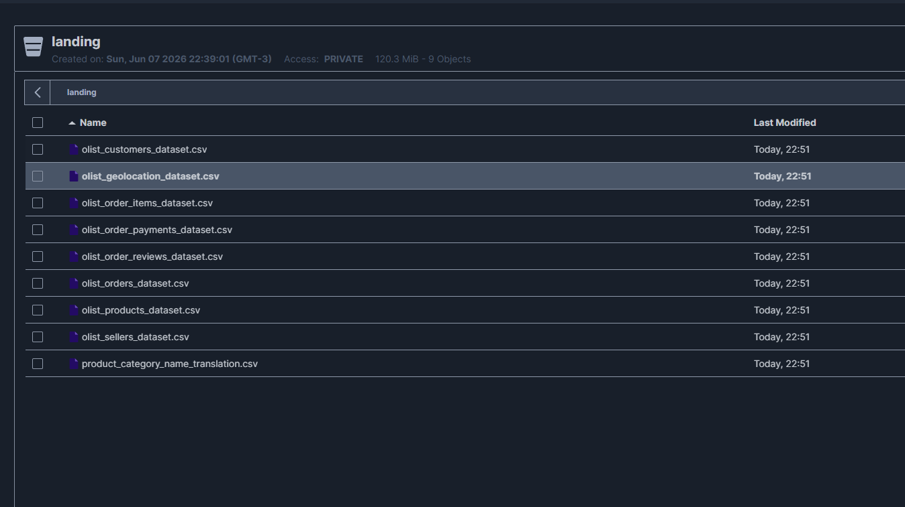

Camada Landing
Documentação da camada Landing da pipeline.
Objetivo
A camada Landing é o ponto de entrada dos dados no pipeline. Sua principal função é receber e armazenar os dados brutos provenientes do Supabase, preservando integralmente seu conteúdo e estrutura original.
Nesta etapa não são realizadas transformações, limpezas ou enriquecimentos dos dados. O objetivo é garantir a rastreabilidade das informações recebidas, permitindo auditoria, reprocessamento e recuperação dos dados sempre que necessário.
No contexto deste projeto, o Supabase (PostgreSQL) é a única fonte de dados. O notebook 00_download_olist.ipynb conecta ao Supabase, extrai as 12 tabelas como CSV e faz upload para o bucket landing no MinIO, servindo como base para as etapas posteriores nas camadas Bronze, Silver e Gold.
Fonte de Dados
O projeto utiliza o Supabase (PostgreSQL) como fonte única, contendo 12 tabelas divididas em dois grupos:
Dataset Olist
Conjunto público de e-commerce brasileiro com aproximadamente 100 mil pedidos reais entre 2016 e 2018.
- Fonte original: Brazilian E-Commerce Public Dataset by Olist
- Formato no Supabase: tabelas relacionais com nomes no formato
olist_*.csv - Período: 2016–2018
| Tabela no Supabase | Arquivo CSV | Descrição |
|---|---|---|
olist_orders_dataset.csv |
olist_orders_dataset.csv |
Informações dos pedidos |
olist_customers_dataset.csv |
olist_customers_dataset.csv |
Dados dos clientes |
olist_products_dataset.csv |
olist_products_dataset.csv |
Informações dos produtos |
olist_sellers_dataset.csv |
olist_sellers_dataset.csv |
Dados dos vendedores |
olist_order_items_dataset.csv |
olist_order_items_dataset.csv |
Itens dos pedidos |
olist_order_payments_dataset.csv |
olist_order_payments_dataset.csv |
Dados dos pagamentos |
olist_order_reviews_dataset.csv |
olist_order_reviews_dataset.csv |
Avaliações dos clientes |
olist_geolocation_dataset.csv |
olist_geolocation_dataset.csv |
Dados geográficos dos CEPs |
product_category_name_translation |
product_category_name_translation.csv |
Tradução das categorias de produto |
Tabelas Sintéticas
Dados gerados com Faker que simulam a operação de suporte ao cliente vinculada aos pedidos Olist. São populadas pelos scripts de ingestão antes da extração para a Landing.
| Tabela no Supabase | Arquivo CSV | Descrição |
|---|---|---|
agents |
agents.csv |
Agentes de suporte (50 agentes, 10 por equipe) |
support_tickets |
support_tickets.csv |
Tickets de atendimento vinculados a pedidos |
support_ticket_messages |
support_ticket_messages.csv |
Mensagens de cada ticket |
Estrutura no MinIO
Os arquivos são armazenados diretamente na raiz do bucket landing, sem subpastas ou particionamento por data.
landing/
├── olist_customers_dataset.csv
├── olist_geolocation_dataset.csv
├── olist_order_items_dataset.csv
├── olist_order_payments_dataset.csv
├── olist_order_reviews_dataset.csv
├── olist_orders_dataset.csv
├── olist_products_dataset.csv
├── olist_sellers_dataset.csv
├── product_category_name_translation.csv
├── agents.csv
├── support_tickets.csv
└── support_ticket_messages.csv
Jobs de Ingestão
A camada Landing depende de três etapas executadas em ordem.
Pré-requisito 1 — Geração dos Agentes
Script scripts/ingest/generate_agents.py responsável por criar e popular a tabela agents no Supabase.
Fluxo de execução:
- Carrega as variáveis de ambiente do arquivo
.env. - Cria a tabela
agentsno Supabase (se não existir). - Gera 50 agentes (10 por equipe) com nomes sintéticos via Faker.
- Trunca a tabela e insere os registros gerados.
Exemplo de execução:
Equipes: logistics, post_sale, payments, orders, seller_ops
Pré-requisito 2 — Geração dos Support Tickets
Script scripts/ingest/generate_support_tickets_nosql.py responsável por gerar os tickets de suporte e suas mensagens no Supabase.
Fluxo de execução:
- Carrega as variáveis de ambiente do arquivo
.env. - Lê os agentes disponíveis da tabela
agentsno Supabase. - Lê os pedidos da tabela
olist_orders_dataset.csvno Supabase. - Gera 12.000 tickets com dados sintéticos reproduzíveis (seed fixo).
- Recria as tabelas
support_ticketsesupport_ticket_messagesno Supabase. - Insere os tickets e as mensagens correspondentes.
Parâmetros principais:
| Parâmetro | Padrão | Descrição |
|---|---|---|
--record-count |
12000 | Quantidade de tickets a gerar |
--start-date |
2016-01-01 | Data mínima de opened_at |
--end-date |
2018-12-31 | Data máxima de opened_at |
--seed |
42 | Semente para reprodutibilidade |
--orders-csv |
— | Caminho local para o CSV de pedidos (modo dev) |
Exemplo de execução:
Ingestão Landing — Supabase → MinIO
Notebook notebooks/00_download_olist.ipynb responsável por extrair as 12 tabelas do Supabase e fazer upload como CSV para o bucket landing no MinIO.
Fluxo de execução:
- Carrega as variáveis de ambiente a partir do arquivo
.env. - Conecta ao Supabase via
psycopg2. - Para cada tabela em
TABLES, executaSELECT *e exporta como CSV. - Conecta ao MinIO utilizando a API compatível com S3.
- Cria o bucket
landingcaso não exista. - Realiza o upload dos 12 arquivos CSV.
- Verifica se todos os arquivos estão presentes no bucket.
Tabelas — Dataset Olist (9 arquivos CSV)
1. olist_customers_dataset.csv
Dados de clientes com localização anonimizada.
| Coluna | Tipo | Descrição |
|---|---|---|
customer_id |
string | Chave do cliente no pedido (PK) |
customer_unique_id |
string | Identificador único do cliente |
customer_zip_code_prefix |
string | 5 primeiros dígitos do CEP |
customer_city |
string | Cidade do cliente |
customer_state |
string | UF do cliente |
2. olist_geolocation_dataset.csv
Coordenadas geográficas associadas a CEPs brasileiros.
| Coluna | Tipo | Descrição |
|---|---|---|
geolocation_zip_code_prefix |
string | 5 primeiros dígitos do CEP |
geolocation_lat |
float | Latitude |
geolocation_lng |
float | Longitude |
geolocation_city |
string | Cidade |
geolocation_state |
string | UF |
3. olist_order_items_dataset.csv
Itens incluídos em cada pedido.
| Coluna | Tipo | Descrição |
|---|---|---|
order_id |
string | ID do pedido (FK → orders) |
order_item_id |
int | Sequencial do item dentro do pedido |
product_id |
string | ID do produto (FK → products) |
seller_id |
string | ID do vendedor (FK → sellers) |
shipping_limit_date |
datetime | Data-limite para o vendedor postar |
price |
float | Preço do item |
freight_value |
float | Valor do frete do item |
4. olist_order_payments_dataset.csv
Informações de pagamento dos pedidos.
| Coluna | Tipo | Descrição |
|---|---|---|
order_id |
string | ID do pedido (FK → orders) |
payment_sequential |
int | Sequencial do pagamento |
payment_type |
string | Tipo (credit_card, boleto, voucher, debit_card) |
payment_installments |
int | Número de parcelas |
payment_value |
float | Valor do pagamento |
5. olist_order_reviews_dataset.csv
Avaliações feitas pelos clientes após a entrega.
| Coluna | Tipo | Descrição |
|---|---|---|
review_id |
string | ID da avaliação (PK) |
order_id |
string | ID do pedido (FK → orders) |
review_score |
int | Nota de 1 a 5 |
review_comment_title |
string | Título do comentário (opcional) |
review_comment_message |
string | Corpo do comentário (opcional) |
review_creation_date |
datetime | Data de criação da avaliação |
review_answer_timestamp |
datetime | Data da resposta ao questionário |
6. olist_orders_dataset.csv
Tabela central de pedidos.
| Coluna | Tipo | Descrição |
|---|---|---|
order_id |
string | ID do pedido (PK) |
customer_id |
string | ID do cliente (FK → customers) |
order_status |
string | Status (delivered, shipped, canceled, …) |
order_purchase_timestamp |
datetime | Data/hora da compra |
order_approved_at |
datetime | Data/hora da aprovação do pagamento |
order_delivered_carrier_date |
datetime | Data de postagem |
order_delivered_customer_date |
datetime | Data de entrega ao cliente |
order_estimated_delivery_date |
datetime | Data estimada de entrega |
7. olist_products_dataset.csv
Catálogo de produtos vendidos na plataforma.
| Coluna | Tipo | Descrição |
|---|---|---|
product_id |
string | ID do produto (PK) |
product_category_name |
string | Categoria (em português) |
product_name_length |
int | Comprimento do nome |
product_description_length |
int | Comprimento da descrição |
product_photos_qty |
int | Quantidade de fotos |
product_weight_g |
int | Peso em gramas |
product_length_cm |
int | Comprimento em cm |
product_height_cm |
int | Altura em cm |
product_width_cm |
int | Largura em cm |
8. olist_sellers_dataset.csv
Dados de localização dos vendedores.
| Coluna | Tipo | Descrição |
|---|---|---|
seller_id |
string | ID do vendedor (PK) |
seller_zip_code_prefix |
string | 5 primeiros dígitos do CEP |
seller_city |
string | Cidade do vendedor |
seller_state |
string | UF do vendedor |
9. product_category_name_translation.csv
Tradução dos nomes de categoria de produto (PT → EN).
| Coluna | Tipo | Descrição |
|---|---|---|
product_category_name |
string | Nome da categoria em português |
product_category_name_english |
string | Nome da categoria em inglês |
Tabelas — Dados Sintéticos (3 arquivos CSV)
10. agents.csv
Agentes de suporte ao cliente gerados com Faker.
| Coluna | Tipo | Descrição |
|---|---|---|
agent_id |
string | ID do agente (PK) — formato agt_XXXX |
alias |
string | Nome fictício do agente |
team |
string | Equipe (logistics, post_sale, payments, orders, seller_ops) |
11. support_tickets.csv
Tickets de atendimento ao cliente vinculados a pedidos Olist.
| Coluna | Tipo | Descrição |
|---|---|---|
ticket_id |
string | ID do ticket (PK) |
order_id |
string | ID do pedido (FK → olist_orders_dataset) |
customer_id |
string | ID do cliente (FK → olist_customers_dataset) |
agent_id |
string | ID do agente (FK → agents) |
channel |
string | Canal (chat, email, whatsapp, phone) |
issue_type |
string | Tipo do problema relatado |
priority |
string | Prioridade (high, medium, low) |
status |
string | Status atual do ticket |
opened_at |
timestamp | Data e hora de abertura |
first_response_minutes |
int | Tempo até a primeira resposta (minutos) |
sla_target_hours |
int | Meta de SLA conforme a prioridade |
closed_at |
timestamp | Data e hora de encerramento (quando aplicável) |
resolution_outcome |
string | Resultado do atendimento |
resolution_hours |
int | Horas até a resolução (quando aplicável) |
requires_seller_action |
boolean | Se o problema exige ação do vendedor |
resolution_compensation |
string | Compensação oferecida ao cliente (quando aplicável) |
12. support_ticket_messages.csv
Histórico de mensagens de cada ticket. Cada ticket possui exatamente duas mensagens: uma do cliente e uma do agente.
| Coluna | Tipo | Descrição |
|---|---|---|
message_id |
string | ID da mensagem (PK) |
ticket_id |
string | ID do ticket (FK → support_tickets, ON DELETE CASCADE) |
sender |
string | Remetente (customer ou support_agent) |
sent_at |
timestamp | Data e hora do envio |
body |
string | Texto da mensagem |
Estrutura da Camada Landing
Representação visual do fluxo de ingestão dos dados brutos no Data Lake.

Tratamento de Erros
Os scripts realizam validações para:
- Ausência de
SUPABASE_URLnas variáveis de ambiente. - Falha de conexão com o Supabase ou com o MinIO.
- Erros durante o upload dos arquivos.
- Ausência de arquivos esperados após a carga.
- Tabela de agentes vazia (execute
generate_agents.pyantes degenerate_support_tickets_nosql.py).
Em caso de erro crítico, a execução é interrompida para evitar cargas incompletas.
Resultado
Ao final da execução, todos os 12 arquivos CSV ficam disponíveis na raiz do bucket landing, prontos para consumo pela camada Bronze.